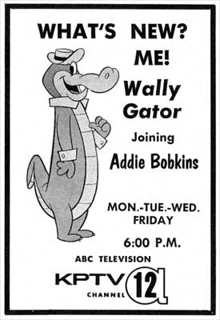

The Addie Bobkins Show
August 21,
1961 -
August 28, 1964
Cartoon Castle
1963
Popeye's Pier 12
July 22,
1963 -
August 28, 1964

Addie Bobkins and Feather
Children's cartoon show hosted by
Bob Adkins, whose on-air name was "Addie Bobkins."
Addie interviews movie star Donald Duck, with an assist by
Clarence Nash, the voice of Donald.
Ad given to prospective clients, or to children
wanting an autograph.
[Photo courtesy Wade Evans]
|
|
|
|
|
 |
| Four
TV Guide ads from
the
week
of
September
17, 1961. |
TV
Guide
ad
from
December
18,
1963

Besides
"Feather,"
Addie
Bobkins
also
played
host
to
other
animals,
including
Wally
Gator,
Touché
Turtle
and
Lippy
Lion,
as
featured
in
this
TV
Guide
ad
from
September
3,
1962.

Addie
Bobkins
paid
tribute
to
the
man
who
succeeded
him
on
"Popeye's
Pier
12"
during
Ramblin'
Rod's
25th
Anniversary
Party
at
Oak's
Park
in
1989.
|
Popeye's
Pier 12
BROADCAST HISTORY |
AUG
1961 -
MAY 1962: MON-FRI 4:30PM-5:00PM
FEB 1962 - : MON-FRI
5:30PM-6:00PM
SEP 1962 - FEB 1963: MON-FRI 8:00AM-8:30AM
MAR 1963 - APR 1963: MON-FRI 6:00PM-6:30PM
APR 1963 - AUG 1963: MON-FRI 6:00PM-6:30PM (CARTOON CASTLE)
JUL 1963 - AUG 1963: MON-FRI 5:30PM-6:00PM (POPEYE'S PIER 12)
OCT 1963 - : MON-FRI 5:30PM-6:00PM
JUL 1964 - AUG 1964: MON-FRI 5:00PM-6:00PM
|

| Addie
Bobkins,
King
of
the
Boo
Boo's,
is
my
father...
what
a
wonderful
time
in
our
lives
that
was...
pies
in
his
face,
Mr.
Weird
Beard
and
the
rest
of
the
puppet
gang,
and
lip-syncing
to
the
Beatles....
I
live
in
Phoenix
now,
but
still
run
into
people
from
the
Northwest
who
remember
my
dad.
It
warms
my
heart
to
know
the
far-reaching
affect
he
had
on
people.
He
is
still
having
fun
doing
some
voice-over
work,
is
active
at
church,
and
is
loving
golf.
I
remember
the
countless
hours
of
volunteering
he
did
for
the
March
of
Dimes...
My
father
taught
me
that
where
much
is
given,
much
is
expected.
Thank
you
for
this
website
-
what
a
grand
trip
down
memory
lane...
Debbie
Adkins
Fischer
Phoenix,
AZ
Editor's note: Bob Adkins passed away in early 2005 after a brief bout
with cancer. We extend our condolences to his fans and family.

|
  
This
page
last
updated
on
August 23, 2025
|